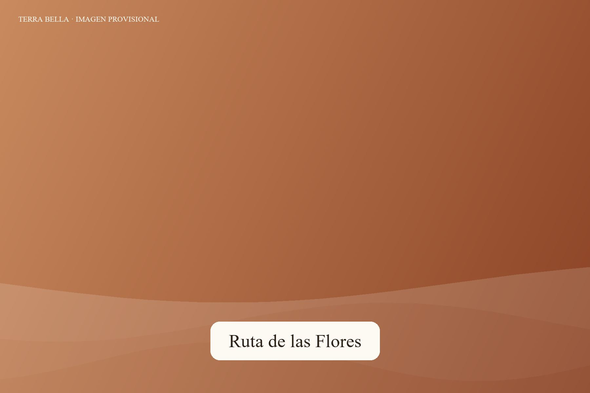

Museo Nacional de Antropología (MUNA)
La historia de El Salvador desde los primeros pueblos hasta hoy, en el edificio de al lado.

Playas de surf por la mañana, un volcán y un lago de cráter por la tarde, pueblos de café al día siguiente. Desde San Benito, todo queda a menos de dos horas.
La historia de El Salvador desde los primeros pueblos hasta hoy, en el edificio de al lado.
La mejor colección de arte salvadoreño moderno y contemporáneo, con exposiciones temporales.
Restaurantes, cafés de especialidad, galerías y vida nocturna en el barrio más caminable de la ciudad.
Calle peatonal con murales, bares y mercadito nocturno los fines de semana.
Olas para todos los niveles, clases de surf y atardeceres sobre roca negra. El Zonte es la llamada "Bitcoin Beach".
La caminata al cráter turquesa del volcán más alto del país y un baño en el lago después.
El cráter del volcán de San Salvador, con senderos cortos y vista de toda la ciudad.
Juayúa, Apaneca, Ataco y Nahuizalco: café, murales, cascadas y feria gastronómica de fin de semana.
Calles empedradas, casas coloniales, el lago Suchitlán y arte en cada esquina.
La "Pompeya de América": una aldea maya sepultada por ceniza y conservada intacta.
Fincas de altura en la cordillera de Apaneca-Ilamatepec, con catación y recorridos de cosecha.
La Catedral, el Teatro Nacional, el Palacio Nacional y la renovada plaza Gerardo Barrios.
Escríbenos y preparamos traslados, guías y reservas antes de que llegues.
Escribir a recepción